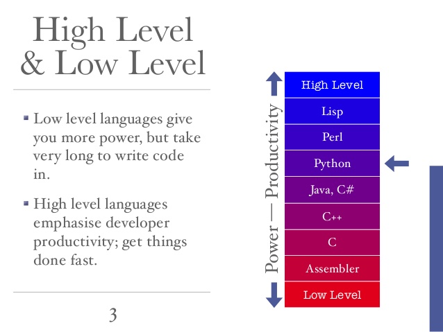
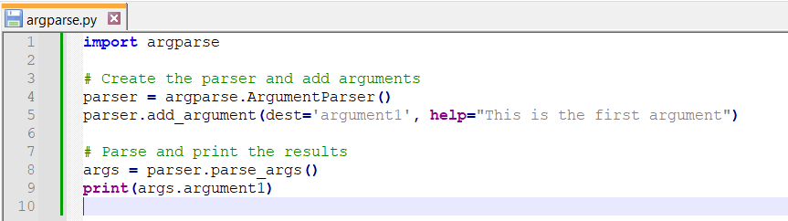

Moduł 1 - Środowisko Python - 2025/2026#
Ten moduł otwiera kurs dla kierunku Satellite and Space Data Engineering. Skupiamy się na wyborze środowiska pracy, konfiguracji narzędzi oraz pierwszym uruchomieniu kodu, który będzie przetwarzał dane satelitarne i telemetryczne. Po ukończeniu modułu będziesz umiał przygotować komputer lokalny lub środowisko w chmurze do zadań takich jak pobieranie scen Sentinel, tworzenie modeli orbity czy analizę chmur punktów.
Dlaczego Python?#
Python łączy prostą składnię z rozbudowanym ekosystemem bibliotek, dzięki czemu już w pierwszym tygodniu możesz pobrać dane z API, policzyć parametry orbity i przygotować wykresy. Ten moduł pokazuje, jak skonfigurować narzędzia, które wykorzystasz w dalszych częściach kursu.
Najważniejsze atuty:
szybki start – interaktywny interpreter pozwala testować obliczenia orbitalne i prototypy filtrów danych;
bogate biblioteki –
numpy,pandas,rasterio,satpy,sgp4,pyprojsą dostępne w jednym środowisku;przenośność – ten sam kod uruchomisz lokalnie, w Google Colab lub na serwerze misji.
W kolejnych sekcjach skupimy się na tym, jak te cechy przełożyć na praktyczne workflow: tryby uruchamiania, wybór IDE i konfigurację środowiska.

Najważniejsze cechy języka#
wysoki poziom – skupiasz się na algorytmie i danych zamiast na zarządzaniu pamięcią;
interpretowany – możesz uruchomić fragment kodu od razu w konsoli lub notatniku;
wieloparadygmatowy – obsługuje styl imperatywny, funkcyjny i obiektowy;
bogata standardowa biblioteka – moduły do pracy z datami, plikami, siecią czy systemem operacyjnym są dostępne od ręki.
Zapamiętaj te właściwości, bo wpływają na sposób, w jaki będziemy pisać i uruchamiać kod w dalszej części kursu.
Co oznacza “wysoki poziom”?#
Nie musisz samodzielnie zarządzać pamięcią ani deklarować typów zmiennych jak w C/C++. Python dba o alokację i zwalnianie zasobów, dzięki czemu szybciej tworzysz prototypy (np. parser TLE czy konwerter współrzędnych).
Interpretowany vs. kompilowany#
W językach kompilowanych (C/C++) kod tłumaczysz do postaci binarnej przed uruchomieniem. W Pythonie interpreter czyta kod linia po linii i wykonuje go natychmiast. To ułatwia pracę w notatnikach i terminalu, ale oznacza, że warto pilnować jakości kodu (testy, czytelność), by uniknąć błędów w czasie wykonywania.
Programowanie obiektowe w praktyce#
Python obsługuje paradygmat obiektowy – wszystko jest instancją klasy, ma atrybuty i metody. Już w Module 5 zbudujesz własne klasy opisujące instrumenty czy zadania przetwarzania danych. Na razie zapamiętaj, że funkcje można wywoływać zarówno globalnie (len(lista)) jak i na obiektach (lista.append(x)).

Semantyka kodu – pamiętaj, że przypisania, typy i operacje odnoszą się do obiektów wskazywanych przez nazwy. Ten schemat przyda się, gdy będziemy śledzić referencje w listach czy słownikach.

Ekosystem bibliotek#
Python zyskał popularność dzięki potędze bibliotek: każde zadanie – od pobierania danych satelitarnych (sentinelsat), przez obróbkę rastrów (rasterio, xarray), po uczenie maszynowe (scikit-learn, torch) – ma gotowe narzędzia. Instalując dystrybucję Anaconda/conda-forge otrzymujesz większość z nich jednym poleceniem. To dlatego Python jest naszym domyślnym językiem na kierunku.
Python - Kiedy nie?#
Podczas gdy Python jest świetnym środowiskiem w wielu skryptowych i analitycznych zastosowaniach, nie jest to zawsze najbardziej optymalne rozwiązanie.
Uogólniając, Python nie sprawdzi się w:
Aplikacjach o bardzo bardzo dużej złożoności obliczeniowej i strukturalnej
Często języki kompilowane okażą się wydajniejsze niż Python np. Java, C++
Pytanie co jest cenniejsze, czas programisty czy CPU?
Tryb interaktywny - konsola#
Gdy chcesz szybko sprawdzić fragment kodu (np. obliczyć nachylenie orbity z danych TLE albo przetestować parser pliku GeoJSON), uruchom interpreter w terminalu/PowerShellu.
$ python
Python 3.11.8 |conda-forge| (main, Jan 12 2025, 10:11:00)
[GCC 11.3.0] on linux
>>> satellites = {"S2A": "Sentinel-2A", "S2B": "Sentinel-2B", "L8": "Landsat 8"}
>>> for code, name in satellites.items():
... print(f"{code}: {name}")
...
S2A: Sentinel-2A
S2B: Sentinel-2B
L8: Landsat 8
>>> from math import radians, cos
>>> inclination = 98.62
>>> print(f"cos(i) = {cos(radians(inclination)):.3f}")
cos(i) = -0.155
>>> exit()
To najszybszy sposób na testowanie funkcji i bibliotek (sgp4, pyproj, numpy) zanim włączysz je do większego projektu.
Tryb skryptowy#
Gdy automatyzujesz zadania (np. cykliczne pobieranie scen Sentinel-2 lub raporty GNSS), zapisuj kod w pliku .py i uruchamiaj go jako skrypt.
$ python fetch_scene.py --mission S2A --aoi data/polygons/wroclaw.geojson --date 2025-03-01
Pobieram produkt S2A_MSIL2A_20250301T095021...
Zapisano pliki w katalogu data/raw/S2A/2025-03-01
W tym trybie korzystasz z argumentów wiersza poleceń, harmonogramów (np. cron, Harmonogram zadań Windows) i modułów takich jak argparse, co będzie kluczowe przy projektach w Modułach 8‑9.

$ python skala_ocen.py
5.0 bardzo dobry
4.5 dobry plus
4.0 dobry
3.5 dostateczny plus
3.0 dostateczny
2.0 niedostateczny

$ python argparse.py
usage: argparse_basic.py [-h] argument1
argparse_basic.py: error: the following arguments are required: argument1
$ python argparse.py "Hello, world!"
Hello, world!
$ python argparse.py 3.14159
3.14159
Jak pisać swój kod#
Pracując nad analizą danych, tworzeniem skryptów czy programów, potrzebujemy narzędzi, które pozwolą nam swobodnie posługiwać się danym językiem, sprawnie operować zmiennymi i procesem, zwizualizować dane itd.
Skrypt możemy napisać w najprostszym edytorze tekstu t.jk. notatnik czy Notepad++
Istnieją notomiast aplikacje dedykowane do pracy z kodem - tzw. IDE - zintegrowane środowisko programistyczne (Integrated Development Environment)
Co to jest IDE?
Integrated Development Environment to środowisko programistyczne, które służy do tworzenia, modyfikowania i testowania oprogramowania/ kodu źródłowego. Wiele firm oferuje różne środowiska, zarówno darmowe, jak również zaawanosowane płatne wersje.
IDE umozliwia między innymi:
- Szybką i wygodną edycję kodu
- Debugowanie kodu (śledzenie wartości zmiennych, zatrzymywanie kodu w dowolnym miejscu)
- Podpowiedzi nazw funkcji i zmiennych
- Dynamiczne sprawdzanie składni
Python domyślnie instaluje proste środowisko IDLE, które nie ma zbyt wielu funkcjonalności.
Jupyter#
Jupyter Notebook to lekkie, webowe środowisko, w którym powstają wszystkie moduły kursu. Każdy segment (Mod0‑Mod9) to osobny notatnik .ipynb, dzięki czemu masz komplet kodu, opisów i wyników w jednym pliku. W kontekście danych satelitarnych notatnik pozwala połączyć kod pobierający scenę z Copernicus Hub, opis metod przetwarzania oraz wizualizacje (np. mapy NDVI) w jednym miejscu.
Zalecany workflow:
W repozytorium otwórz notatnik modułu (
Mod1.ipynb) w Jupyter Lab (jupyter lab).Uruchamiaj komórki po kolei, zapisując konfigurację środowiska i wyniki (np. wersje bibliotek
rasterio,geopandas).Dodawaj komentarze/komórki Markdown, aby dokumentować decyzje z zadań (np. dlaczego dobrałeś konkretną projekcję).
Ta forma świetnie sprawdza się przy eksploracji danych i przygotowaniu raportów misji.
print("Hello")
Hello
Google Colab#
Google Colaboratory (“Colab”) to hostowany notatnik kompatybilny z Jupyterem. Możesz uruchamiać moduły bez instalacji lokalnej – otwierasz ModX.ipynb z repozytorium, zapisujesz jego kopię na Dysku Google i zaczynasz pracę.
Dlaczego Colab przydaje się w zadaniach satelitarnych?
szybki dostęp do GPU/TPU, gdy testujesz modele ML nad chmurami punktów lub klasyfikujesz obrazy;
łatwe podłączanie danych z Google Drive lub zewnętrznych API (Copernicus, NASA Earthdata) – wystarczy zamontować katalog i używać
requests/earthengine-api;łatwe współdzielenie wyników: wysyłasz link do notatnika z opisem eksperymentu.
Pamiętaj, aby w pierwszej komórce instalować brakujące pakiety (!pip install rasterio geopandas sgp4) i wskazać folder kursu na Dysku, aby mieć stały dostęp do danych.
PyCharm#
PyCharm to pełnoprawne IDE, świetne gdy projekt rośnie: masz dziesiątki modułów, testy jednostkowe i integrację z systemem kontroli wersji. W kontekście inżynierii danych satelitarnych sprawdza się przy budowie większych pipeline’ów (np. aplikacji pobierającej dane GNSS i publikującej raporty). Community Edition wystarczy do naszych zadań.
Przykładowy workflow:
Klonujesz repozytorium kursu i otwierasz je jako projekt w PyCharmie.
Tworzysz środowisko
conda/venvz pakietami (rasterio,numpy,satpy).Konfigurujesz konfiguracje uruchomieniowe (
Run/Debug Configurations) dla skryptów konsolowych z Modułów 8‑9.
Instalacja: https://www.jetbrains.com/pycharm/download/#section=windows

Visual Studio Code#
VS Code to lekkie środowisko z rozbudowanym systemem wtyczek. Po zainstalowaniu rozszerzeń Python oraz Jupyter otrzymujesz autouzupełnianie, debugger i obsługę notatników w jednym oknie. VS Code dobrze współpracuje z conda i Git (wbudowany panel Source Control), a dzięki Remote SSH możesz łączyć się z serwerami obliczeniowymi misji i uruchamiać tamtejsze środowisko.
Szybki start:
Zainstaluj VS Code i rozszerzenia Python + Jupyter.
Otwórz katalog repozytorium kursu jako folder roboczy.
Wybierz interpreter
igg-space(Ctrl+Shift+P → Python: Select Interpreter).Twórz/otwieraj notatniki lub skrypty i korzystaj z wbudowanego terminala (
Ctrl+``) do uruchamiania poleceńconda/git`.
Spyder#
Spyder przypomina Matlab/RStudio – ma konsolę, edytor i podgląd zmiennych. Dzięki temu dobrze nadaje się do analizy danych przestrzennych i macierzy (NumPy) w czasie rzeczywistym. Możesz np. wczytać raster Sentinel-1, podejrzeć tablice w Variable Explorer i szybko modyfikować kod. Spyder jest częścią Anacondy, więc po instalacji dystrybucji masz go gotowego do pracy.

Co wybrać#
wybór narzędzia zależy od zadania: eksploracja danych i listy ćwiczeń → Jupyter/Google Colab, większe skrypty i projekty → PyCharm lub VS Code;
rekomendacja kursowa: utrzymuj lokalne środowisko (Anaconda + Jupyter Lab) i równoległą kopię na Google Colab do pracy zdalnej;
jeśli tworzysz pipeline do pobierania danych (Moduł 9), wygodniej jest w IDE (PyCharm/VS Code) z integracją Git;
pamiętaj o spójności: trzymaj to samo środowisko pakietów (
environment.yml) niezależnie od narzędzia.
Mój komputer nie rozumie Pythona#
Python to język programowania – aby komputer rozumiał pisane przez nas instrukcje, musimy zainstalować interpreter. Najbezpieczniej pobrać go z https://www.python.org/downloads/, ale w praktyce szybciej skonfigurujesz środowisko korzystając z dystrybucji Anaconda lub Miniforge (conda-forge).
Po instalacji sprawdź w terminalu/PowerShellu:
python --version
pip --version
Jeśli te polecenia zwracają numery wersji (np. 3.11.8), możesz przejść do tworzenia środowiska dla kursu.
Anaconda#
Rdzeń języka plus standardowe biblioteki to dopiero początek. Anaconda/Miniforge dostarcza gotowy instalator Pythona wraz z pakietami naukowymi i menedżerem conda, który ułatwia instalację kolejnych bibliotek (np. GDAL, rasterio, satpy).
Pobierz instalator: https://www.anaconda.com/download lub conda-forge/miniforge
Po instalacji w PowerShellu/terminalu utwórz dedykowane środowisko:
conda create -n igg-space python=3.11 geopandas rasterio satpy sgp4 numpy
conda activate igg-space
Zainstaluj brakujące biblioteki przez
conda installlubpip install(np.pip install sentinelsat).
Składniki Anacondy obejmują m.in. Jupyter Lab, Spydera, biblioteki NumPy/Pandas/Matplotlib – czyli wszystko, czego potrzebujemy w pierwszych modułach.
Instalacja pakietów w Anacondzie (przykład):
conda install -c conda-forge sentinelsat geopandas
Komendę wykonaj w Anaconda Prompt / PowerShell (Windows) lub terminalu (macOS/Linux). Zwracaj uwagę na kanał conda-forge, bo zapewnia świeże wersje bibliotek naukowych.
tip: włącz Anaconda Prompt jako administrator, gdy instalujesz pakiety wymagające dostępu do systemu (np. GDAL).
Terminal / PowerShell – ściąga poleceń#
Cel |
macOS/Linux |
Windows PowerShell |
|---|---|---|
sprawdź katalog |
|
|
zmień katalog |
|
|
pokaż bieżącą ścieżkę |
|
|
utwórz katalog |
|
|
aktywuj środowisko |
|
|
lista środowisk |
|
|
uruchom plik |
|
|
start Jupyter Lab |
|
|
Te polecenia będziemy stosować w większości modułów, dlatego dobrze je znać lub mieć pod ręką.
Test środowiska#
Po aktywacji środowiska uruchom w terminalu: python - <<’PY’ import rasterio, geopandas, sgp4 print(‘rasterio’, rasterio.version) print(‘geopandas’, geopandas.version) from sgp4.api import Satrec print(‘SGP4 działa:’, isinstance(Satrec(), Satrec)) PY
Jeśli wszystkie biblioteki importują się poprawnie, możesz przejść do pracy z notatnikami. W razie błędów sprawdź, czy zainstalowałeś wersje pakietów z kanału conda-forge.
Najczęstsze problemy i rozwiązania#
ImportError: No module named 'osgeo'– zainstaluj biblioteki przestrzenne z kanałuconda-forge:conda install -c conda-forge gdal rasterio.pipicondakonfliktują – trzymaj się jednego narzędzia na środowisko; jeśli musisz użyćpip, rób to po instalacji pakietówcondai dodajpip install --upgrade pip.Brak komendy
pythonw terminalu – upewnij się, że aktywowałeś środowisko (conda activate igg-space) albo dodaj Pythona do zmiennej PATH podczas instalacji.Błędy kompilacji przy instalacji pakietów – na Windowsie uruchom Anaconda Prompt (Admin); na macOS/Linux doinstaluj narzędzia deweloperskie (
xcode-select --install,build-essential).
Zapisuj napotkane błędy – szybciej pomożemy Ci na zajęciach, jeśli pokażesz pełny komunikat.
satellite = {
'name': 'Sentinel-2A',
'altitude_km': 786,
'instruments': ['MSI']
}
print('Typ obiektu:', type(satellite))
Typ obiektu: <class 'dict'>
print('Dostępne klucze:', list(satellite.keys()))
Dostępne klucze: ['name', 'altitude_km', 'instruments']
print('Instrument główny:', satellite['instruments'][0])
Instrument główny: MSI
from dataclasses import dataclass
@dataclass
class Satellite:
name: str
altitude_km: float
inclination: float
s2a = Satellite('Sentinel-2A', 786, 98.62)
print(s2a)
print('Atrybuty obiektu:', s2a.__dict__)
Satellite(name='Sentinel-2A', altitude_km=786, inclination=98.62)
Atrybuty obiektu: {'name': 'Sentinel-2A', 'altitude_km': 786, 'inclination': 98.62}
message = 'python w kosmosie'
print(message.title())
Python W Kosmosie
print(message.replace('kosmosie', 'orbicie'))
python w orbicie
x.replace("T","W")
---------------------------------------------------------------------------
NameError Traceback (most recent call last)
Cell In[10], line 1
----> 1 x.replace("T","W")
NameError: name 'x' is not defined
W Pythonie wszystkie jest obiektem. Wszystko z czego korzystamy istnieje w swoim własnym pudełku, które określane jest jako obiekt Pythona. Każdy obiekt ma przypisaną klasę, swoje metody, określone działanie funkcji, i atrybuty. W parktyce czyni do język bardzo elastycznym i spójnym. Im wcześniej sie to zrozumie tym łatwiej wejść na kolejne poziomy umiejętności programowania.
Funkcje a metody#
Funkcje Pythona wywołujemy poprzez schemat: nazwa(atrybut1,atrybut2)
Niemal każdy obiekt (a tak naprawdę klasa) w Pythonie ma “podpięte” “swoje” “funkcje” nazwane metodami
Funkcje
Funcje mają strukturę (syntax) następującej postaci:
nazwa(parametr_1,parametr_2,…,parametr_n)
Wyróżniamy funkcje wbudowane i funkcje zdefiniowane przez użytkownika.
Funkcje wbudowane są dostepne poprzez wywołanie ich nazwy wprost w kodzie (dostępne tu: https://docs.python.org/2/library/functions.html). Przykładem takiej funkcji jest print()
Funkcje definiowane przez użytkownika pozwalają na utworzenie nowej funkcjonalności (zajmiemy się nimi później)
Metody
Python jest językiem programowania obiektowego . Oznacza to, że wszystko w nim jest obietem, który ma swoje właściwości, takie jak atrybuty i metody (o tym dokładniej w dalszej części wykładów).
Metody wywoływane są zatem na obiektach. Ich syntax to: nazwa_obiektu.nazwa_metody(parametr_1,parametr_2,…,parametr_n)
Istnieje w języku kilka wbudowanych obiektów, które posiadają wbudowane metody. Przykładem wbudowanych obiektów są typy danych.
Metody a atrybuty#
Obiekty w Pythonie zazwyczaj posiadają zarówno atrybuty (inne obiekty Pythona przechowywane “wewnątrz” obiektu) oraz metody (funkcje związane z obiektem, które mogą mieć dostęp do wewnętrznych danych obiektu).
Klasy
Żeby zrozumieć istotę działania metod i ich różność od funkcji oraz atrybutów, przyjrzyjmy się czym jest obiekt.Obiekt to wszystko co napiszemy w Pythonie. To zarówno klasy jak i funkcje.
Spotkamy się z metodami przypisanymi do klas. Klasa to bardzo ważny element języków obiektowych.
Czym zatem jest klasa?
Klasa to abstrakcja pewnego obiektu. Oznacza to uogólnieniony opis pewnego elementu, który zdefiniowany jest przez taką klasę poprzez określenie jego typowych cech (atrybutów) i operacji (metod), które można na nim wykonać. Tą samą strukturą opisujemy elementy świata rzeczywistego.
Przykład obrazujący:
Pizza to abstrakcyjna klasa, którą opisujemy pewien typ dania. Ma cechy (atrybuty):
- Składniki
- Sos
Oraz metody:
- Jedz
- Polej oliwą
- Wyrzuć (nie używać!)
Instancja
To praktyczna realizacja klasy.
Kontynuując przykład obrazujący:
Piekąc pizzę nadajemy jej atrybuty - składniki (pieczarki, ser) i sos (pomidorowy). Wtedy otrzymujemy instancję klasy pizza w postaci pizzy funghi.
Pizza to abstrakcyjna klasa, którą opisujemy pewien typ dania. Ma cechy (atrybuty):
- Składniki = [pieczarki, ser]
- Sos = pomidorowy
Teraz możemy wywołać metodę na naszej instancji, która zdefiniowana już jest w klasie:
pizza_funghi.jedz()
Importy#
Korzystając z “surowego” Pythona, użytkownik ma dostęp do ograniczonej funkcjonalności wbudowanych funkcji i typów danych.
Zaawansowana funkcjonalność Pythona zamknięta jest w bibliotekach/modułach, które należy zaimportować, aby móc z nich skorzystać.
W Pythonie moduł to zwyczajnie plik z rozszerzeniem .py zawierający odrobine kodu, który możemy wykorzystać (zbiór funkcji, zmiennych, klas)
Importy#
Przykłady:
import os
import scipy.signal as sig
from math import *
from subprocesses import blabla, blabla2
Operatory binarne#
a + b
a - b
a * b
a / b
a // b (usuwa część po przecinku - floor-divide)
a ** b
a += b; a *= b; a /= b; --> a = a + b
a == b
a != b
a <= b; a < b
a is b
a is not b
Czytelność kodu#
przejrzysty kod
zrozumiałe nazwy zmiennych
dzielenie linii nie boli
konsekwencja w konwencji
najlepiej trzymać się standardu PEP 8: https://www.python.org/dev/peps/pep-0008/
ale bez przesady - przede wszystkim kod ma być czytelny
Wcięcia#
Każdy nowy poziom kodu powinien być od siebie oddzielony przez 4 spacje
Tabulatory nie są zakazane ale należy używać ich konsystentnie w strukturze kodu
Komentarze#
Komentarze które zaburzają klarowność kodu są gorsze niż brak komentarzy
Uzywaj pełnych zdań gdy komentujesz kod
Upewnij się, że twój komentarz jest zrozumiały dla każdego, któ kiedykolwiek miałby przeczytać kod
Uzywaj języka angielskiego
Komentarze blokowe#
Wplatane za pomocą znaku “#” na tym samym poziomie, do którego się odnoszą np:
# przez lenistwo prowadzącego oceny wystawiane losowo
for student in lista_studentow:
# losowa ocena
ocena = random.choice(list(oceny_uwr))
# przypisanie oceny
print(student, " -> ", oceny_uwr[ocena])
Komentarze w tej samej linii co kod#
Raczej unikamy
x = x + 1 # Increment x
… chyba, że mają coś wnieść, wtedy nikt Ci tego nie zabroni
Dokumentowanie funkcji/modułów#
def says(self, sound=None):
"""Prints what the animals name is and what sound it makes.
If the argument `sound` isn't passed in, the default Animal
sound is used.
Parameters
----------
sound : str, optional
The sound the animal makes (default is None)
Raises
------
NotImplementedError
If no sound is set for the animal or passed in as a
parameter.
"""
def say_hello(name):
"""A simple function that says hello..."""
print(f"Hello {name}, is it me you're looking for?")
Unikamy#
Niektórych znaków#
Nie używaj liter ‘l’ (lowercase letter el), ‘O’ (uppercase letter oh), oraz ‘I’ (uppercase letter eye) jako nazwy zmiennych
Te znaki są praktycznie nierozróżnialne w wielu fontach
Kompatybilność ASCI#
Mimo, że Python Ci na to pozwoli, nie używaj polskich znaków !
Nazwy Klas#
Używaj konwencji CapWords WspolrzedneStacji()
Funkcje i nazwy zmiennych#
lowercase, ze słowami oddzielonymi przez “_” to_jest_moja_funkcja()
mixedCase raczej nie jest rekomendowany, ale ważne żeby być spójnym wewnątrz
Argumnety funkcji#
Uzywaj self jako pierwszego argumentu metody
Uzywaj cls jako piewrszy argument klasy
STAŁE#
Używaj konwencji UPPER_CASE_WITH_UNDERSCORES: PI, TOTAL itd.
Czytelność kodu - Poprawnie#
import random
# skala ocen obowiązująca na Uniwersytecie Przyrodniczym we Wrocławiu
oceny_upwr = {2.0: "niedostateczny",
3.0: "dostateczny",
3.5: "dostateczny plus",
4.0: "dobry",
4.5: "dobry plus",
5.0: "bardzo dobry"}
# lista studentów uczęszczających na zajęcia z Pythona
lista_studentow = ["Kasia", "Basia", "Józek", "Marek"]
# przez lenistwo prowadzącego oceny wystawiane losowo
for student in lista_studentow:
# losowa ocena
ocena = random.choice(list(oceny_upwr))
# przypisanie oceny
print(student, " -> ", oceny_upwr[ocena])
Kasia -> dobry plus
Basia -> dostateczny
Józek -> dostateczny plus
Marek -> dobry plus
Czytelność kodu - Niepoprawnie#
import random
o = {2.0: "niedostateczny", 3.0: "dostateczny", 3.5: "dostateczny plus",
4.0: "dobry", 4.5: "dobry plus", 5.0: "bardzo dobry"}
s = ["Kasia",
"Basia",
"Józek",
"Marek"]
for i in range(len(s)): x = random.randint(2, len(o) - 1); print(s[i], " -> ", o[x])
Kasia -> bardzo dobry
Basia -> dobry
Józek -> dobry
Marek -> dobry